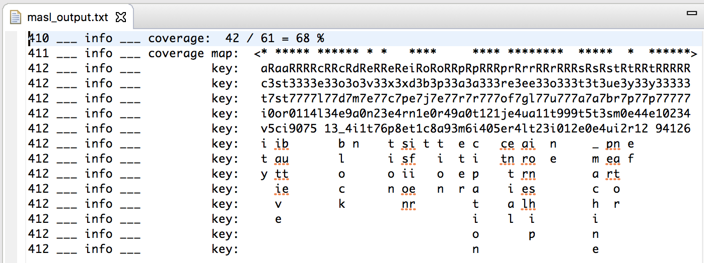

BridgePoint now supports configuring project dependencies via the Project Preferences.
The dependencies are stored under the project in a file named .dependencies. Additional
help information is available inside the tool at Help > BridgePoint UML Suite Help > Reference > User Interface > xtUML Modeling Perspective > Preferences > Project Preferences > Project Dependencies.
BridgePoint uses the configured dependencies to locate *.int files that provide additional
MASL data to validate MASL action bodies.
This work begins to measure how much of the MASL language is being used by an input set of
models. Coverage is based upon the degree to which meta-model elements are populated. Namely,
after an application model has been loaded into the model of MASL structure (meta-model), the
classes and associations are queried and tallied. A ratio of model elements employed over the
total number of possible elements provides a repeatable measurement by which to evaluate coverage.
The coverage report is written during the MASL export process to <project>/gen/code_generation/masl_output.txt

The report shows what classes and relationships are used (indicated by *) or not (indicated by space). The
name of the meta-model element or relationship is shown in the column underneath the indicator.
Numerous bug fixes are included in this release. The complete list is available in the Release Notes.
Highlights include:
Two new MASL example models are now available. The models are published in the public BridgePoint
models repository on github.
The PEI model exercises classes, associations, and MASL action language constructs.
The calculator model demonstrates MASL domain and MASL project modeling following the recommended
idiom. It is translatable and compilable with the MASL model compiler.
BridgePoint OAL now supports operations on instance sets.
| Operator(s) | Description |
|---|---|
| | , + | set union |
| & | set intersection |
| - | set difference |
| ^ | set symmetric difference |
Instance set expressions are used for set arithmetic. Instance reference and instance reference
set types are valid operands for instance set expressions. During evaluation, an operand of
instance reference type is considered to be an instance set containing exactly one instance.

Additional help documentation is available inside the tool via Help > BridgePoint UML Suite Help > Reference > OAL Reference > Expressions.
The MASL Modeling and Conversion Guide is updated to reflect new functionality and for overall
cleanup and improvement.
The entire help documentation for BridgePoint preferences is rewritten to bring it up to date
for available workspace and project preferences.